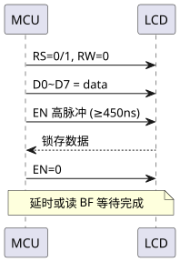
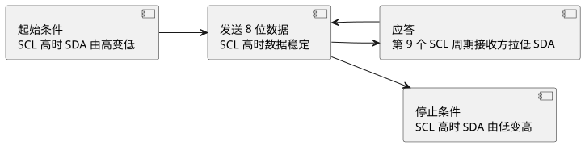

第 11 章 显示与接口技术
学习目标
- 掌握数码管静态/动态显示原理及共阴/共阳段码表的编写
- 能够编写 LCD1602 字符液晶的 C51 驱动程序
- 理解 I2C 总线协议时序并能用 GPIO 软件模拟
- 掌握 AT24C02 EEPROM 读写流程与时序
- 了解 DS1302 实时时钟与 SPI 总线、74HC595 IO 扩展方法
11.1 数码管静态与动态显示
数码管（Seven-Segment Display）由 8 个发光二极管（a/b/c/d/e/f/g + 小数点 dp）按"日"字形排列，分共阴极（公共端接地，段位高电平点亮）和共阳极（公共端接 VCC，段位低电平点亮）两种。一位数码管显示一位数字需 8 条段线 + 1 条位选线。
11.1.1 段码表
段码表是字符（0~9、A~F 等）与 8 位段数据的映射。常见段位顺序为 dp g f e d c b a（dp 在最高位）。下表给出共阴数码管段码（共阳取反即可）：
| 字符 | 共阴段码 | 共阳段码 | 字符 | 共阴段码 | 共阳段码 |
|---|---|---|---|---|---|
| 0 | 0x3F | 0xC0 | 8 | 0x7F | 0x80 |
| 1 | 0x06 | 0xF9 | 9 | 0x6F | 0x90 |
| 2 | 0x5B | 0xA4 | A | 0x77 | 0x88 |
| 3 | 0x4F | 0xB0 | b | 0x7C | 0x83 |
| 4 | 0x66 | 0x99 | C | 0x39 | 0xC6 |
| 5 | 0x6D | 0x92 | d | 0x5E | 0xA1 |
| 6 | 0x7D | 0x82 | E | 0x79 | 0x86 |
| 7 | 0x07 | 0xF8 | F | 0x71 | 0x8E |
11.1.2 静态显示与动态显示
- 静态显示：每位数码管独占一个 8 位 IO 口，编程简单、亮度高，但 IO 占用大，仅适合 1~2 位。
- 动态显示：所有数码管段线并联，位选分开，逐位轮流显示。利用视觉暂留（>50 Hz）人眼看到稳定画面，IO 占用少，是多位数码管主流方案。
动态扫描典型 4 位数码管代码（共阴，P0 段码，P2 低 4 位位选）：
#include <reg52.h>
const unsigned char code SEG[] = { // 共阴 0~9
0x3F, 0x06, 0x5B, 0x4F, 0x66,
0x6D, 0x7D, 0x07, 0x7F, 0x6F
};
unsigned char disp_buf[4] = {1, 2, 3, 4}; // 显示 1234
void Delay_ms(unsigned int ms)
{
unsigned int i, j;
for (i = 0; i < ms; i++)
for (j = 0; j < 110; j++);
}
void Display(void)
{
unsigned char i;
for (i = 0; i < 4; i++) {
P0 = 0x00; // 消影
P2 = (P2 & 0xF0) | (1 << i); // 选中第 i 位
P0 = SEG[disp_buf[i]]; // 送段码
Delay_ms(2); // 显示 2 ms
P0 = 0x00; // 消影
}
}
void main(void)
{
while (1) Display();
}
11.2 LCD1602 字符液晶
LCD1602是 16×2 字符液晶模块，内置 HD44780 控制器，可显示 ASCII 字符，3.3~5V 供电。引脚包括 RS（寄存器选择）、RW（读/写）、EN（使能）、D0~D7（数据）以及 V0（对比度）、A/K（背光正负）。
11.2.1 控制指令表
| 指令 | RS RW | D7..D0 | 功能 |
|---|---|---|---|
| 清屏 | 0 0 | 0x01 | 清除 DDRAM，光标回原点 |
| 归位 | 0 0 | 0x02 | 光标返回 0x00 |
| 输入模式 | 0 0 | 0x06 | 写入后光标右移，画面不动 |
| 显示开关 | 0 0 | 0x0C | 显示开，光标关，闪烁关 |
| 功能设置 | 0 0 | 0x38 | 8 位总线，2 行，5×8 点阵 |
| DDRAM 地址 | 0 0 | 0x80+addr | 设置 DDRAM 地址（第 1 行 0x00~0x27，第 2 行 0x40~0x67） |
| 写数据 | 1 0 | dat | 向 DDRAM 写字符 |
| 读忙标志 | 0 1 | BF..AC | BF=1 表示忙 |
11.2.2 写时序

查看 PlantUML 源码
@startuml
skinparam defaultFontName "Microsoft YaHei"
participant MCU
participant LCD
MCU -> LCD : RS=0/1, RW=0
MCU -> LCD : D0~D7 = data
MCU -> LCD : EN 高脉冲 (≥450ns)
LCD --> MCU : 锁存数据
MCU -> LCD : EN=0
Note over MCU,LCD: 延时或读 BF 等待完成
@enduml11.2.3 C51 驱动代码
#include <reg52.h>
#define LCD_DATA P0
sbit RS = P2^6;
sbit RW = P2^5;
sbit EN = P2^7;
void Delay_ms(unsigned int ms)
{
unsigned int i, j;
for (i = 0; i < ms; i++)
for (j = 0; j < 110; j++);
}
void LCD_WaitBusy(void)
{
LCD_DATA = 0xFF;
RS = 0; RW = 1;
EN = 1; EN = 0; // 下降沿读
while (LCD_DATA & 0x80); // BF=1 等待
}
void LCD_WriteCmd(unsigned char cmd)
{
LCD_WaitBusy();
RS = 0; RW = 0;
LCD_DATA = cmd;
EN = 1; EN = 0; // 下降沿锁存
}
void LCD_WriteDat(unsigned char dat)
{
LCD_WaitBusy();
RS = 1; RW = 0;
LCD_DATA = dat;
EN = 1; EN = 0;
}
void LCD_Init(void)
{
Delay_ms(15); // 上电等待
LCD_WriteCmd(0x38); // 8 位 2 行 5×8
LCD_WriteCmd(0x0C); // 显示开光标关
LCD_WriteCmd(0x06); // 光标右移
LCD_WriteCmd(0x01); // 清屏
Delay_ms(2);
}
void LCD_ShowStr(unsigned char row, unsigned char col, char *s)
{
unsigned char addr = (row == 0) ? 0x00 + col : 0x40 + col;
LCD_WriteCmd(0x80 | addr);
while (*s) LCD_WriteDat(*s++);
}
void main(void)
{
LCD_Init();
LCD_ShowStr(0, 0, "Hello, MCU!");
LCD_ShowStr(1, 2, "Jiaying Univ.");
while (1);
}
11.3 I2C 总线协议与软件模拟
I2C（Inter-Integrated Circuit）是 Philips 公司（现 NXP）提出的二线串行总线：SCL（时钟）+ SDA（数据），所有设备开漏输出 + 上拉电阻线与，支持多主多从，标准模式 100 kHz、快速模式 400 kHz。每帧 8 位数据 + 1 位应答（ACK）。
11.3.1 起始/停止/数据/应答时序

查看 PlantUML 源码
@startuml
skinparam defaultFontName "Microsoft YaHei"
left to right direction
component "起始条件\nSCL 高时 SDA 由高变低" as START
component "发送 8 位数据\nSCL 高时数据稳定" as BYTE
component "应答\n第 9 个 SCL 周期接收方拉低 SDA" as ACK
component "停止条件\nSCL 高时 SDA 由低变高" as STOP
START --> BYTE
BYTE --> ACK
ACK --> BYTE
BYTE --> STOP
@enduml11.3.2 软件模拟 I2C
STC 8位单片机无硬件 I2C，使用 GPIO 软件模拟。SCL、SDA 配置为开漏（写 0 拉低，写 1 释放由上拉拉高）：
#include <reg52.h>
#include <intrins.h>
sbit SCL = P2^1;
sbit SDA = P2^0;
void I2C_Delay(void) { _nop_(); _nop_(); _nop_(); _nop_(); }
void I2C_Start(void)
{
SDA = 1; SCL = 1; I2C_Delay();
SDA = 0; I2C_Delay(); // SCL 高时 SDA 下降沿
SCL = 0; I2C_Delay();
}
void I2C_Stop(void)
{
SDA = 0; SCL = 1; I2C_Delay();
SDA = 1; I2C_Delay(); // SCL 高时 SDA 上升沿
}
bit I2C_Write(unsigned char dat)
{
unsigned char i;
bit ack;
for (i = 0; i < 8; i++) {
SDA = (dat & 0x80) ? 1 : 0;
dat <<= 1;
SCL = 1; I2C_Delay(); SCL = 0; I2C_Delay();
}
SDA = 1; // 释放 SDA 接收 ACK
SCL = 1; I2C_Delay();
ack = SDA; // 0=ACK, 1=NACK
SCL = 0; I2C_Delay();
return ack;
}
unsigned char I2C_Read(bit ack)
{
unsigned char i, dat = 0;
SDA = 1; // 释放 SDA
for (i = 0; i < 8; i++) {
dat <<= 1;
SCL = 1; I2C_Delay();
if (SDA) dat |= 0x01;
SCL = 0; I2C_Delay();
}
SDA = ack ? 1 : 0; // 发送 ACK/NACK
SCL = 1; I2C_Delay(); SCL = 0; I2C_Delay();
SDA = 1;
return dat;
}
11.4 AT24C02 EEPROM 读写
AT24C02是 Atmel（现 Microchip）2 Kbit（256 字节）I2C EEPROM，器件地址 7 位为 1010 A2A1A0，后接 R/W 位。写入后需5 ms内部写周期，连续读可在 256 字节内回绕。
11.4.1 写字节流程
起始 → 发器件地址+W → 等 ACK → 发字节地址 → 等 ACK → 发数据 → 等 ACK → 停止 → 延时 5 ms。
11.4.2 读字节流程
起始 → 发器件地址+W → 等 ACK → 发字节地址 → 等 ACK → 再次起始 → 发器件地址+R → 等 ACK → 读数据 → NACK → 停止。这种"伪写"用于设置读地址。
void EEPROM_WriteByte(unsigned char addr, unsigned char dat)
{
I2C_Start();
I2C_Write(0xA0); // 器件地址 + W
I2C_Write(addr); // 字节地址
I2C_Write(dat); // 数据
I2C_Stop();
Delay_ms(5); // 内部写周期
}
unsigned char EEPROM_ReadByte(unsigned char addr)
{
unsigned char dat;
I2C_Start();
I2C_Write(0xA0); // 伪写
I2C_Write(addr);
I2C_Start(); // 重新起始
I2C_Write(0xA1); // 器件地址 + R
dat = I2C_Read(1); // 读 1 字节并 NACK
I2C_Stop();
return dat;
}
11.5 DS1302 实时时钟简介
DS1302是 Maxim 公司的低功耗实时时钟（RTC），含 31 字节 SRAM，三线串行接口：CE（使能）、SCLK（时钟）、IO（双向数据）。秒、分、时、日、月、周、年寄存器采用BCD 码存储，需在读写时与二进制转换。
| 寄存器 | 写地址 | 读地址 | 范围（BCD） |
|---|---|---|---|
| 秒 | 0x80 | 0x81 | 00~59 |
| 分 | 0x82 | 0x83 | 00~59 |
| 时 | 0x84 | 0x85 | 00~23 / 01~12 |
| 日 | 0x86 | 0x87 | 01~31 |
| 月 | 0x88 | 0x89 | 01~12 |
| 周 | 0x8A | 0x8B | 01~07 |
| 年 | 0x8C | 0x8D | 00~99 |
| 写保护 | 0x8E | 0x8F | bit7=WP |
DS1302 采用类似 SPI 的协议：CE 拉高期间通信，每个字节先发命令字（LSB 在前），SCLK 上升沿写、下降沿读。BCD 与二进制转换：bin = bcd/16*10 + bcd%16，bcd = bin/10*16 + bin%10。
11.6 SPI 总线与 74HC595 扩展 IO
SPI（Serial Peripheral Interface）是 Motorola 提出的同步串行总线，4 线：SCLK（时钟）、MOSI（主出从入）、MISO（主入从出）、CS/SS（片选）。SPI 比 I2C 速度更快（数十 MHz），但线多、无应答。STC 无硬件 SPI，常用 GPIO 软件模拟。
11.6.1 74HC595 串入并出
74HC595是 8 位串入并出移位寄存器，3 条控制线 SER（数据）、SRCLK（移位时钟）、RCLK（锁存时钟）。级联多片可仅用 3 个 IO 扩展任意位输出，是 LED 点阵、数码管驱动首选。
工作时序：每个 SRCLK 上升沿将 SER 上的位移入寄存器；8 位（或多片级联的全部位）移完后 RCLK 上升沿将数据并行输出。OE 接 GND 常通，SRCLR 接 VCC 不清零。
11.6.2 74HC595 级联驱动 8 位数码管
#include <reg52.h>
#include <intrins.h>
sbit SER = P2^0; // 串行数据
sbit SRCLK = P2^1; // 移位时钟
sbit RCLK = P2^2; // 锁存时钟
const unsigned char code SEG[] = {
0x3F, 0x06, 0x5B, 0x4F, 0x66,
0x6D, 0x7D, 0x07, 0x7F, 0x6F
};
// 向 74HC595 写入 1 字节（高位先发）
void HC595_Write(unsigned char dat)
{
unsigned char i;
for (i = 0; i < 8; i++) {
SER = (dat & 0x80) ? 1 : 0;
dat <<= 1;
SRCLK = 1; _nop_(); SRCLK = 0; // 上升沿移位
}
}
// 级联两片：段码 + 位选
void HC595_Show(unsigned char seg, unsigned char pos)
{
HC595_Write(seg); // 第一片：段码
HC595_Write(~pos); // 第二片：位选（共阴低有效）
RCLK = 1; _nop_(); RCLK = 0; // 锁存输出
}
void main(void)
{
unsigned char i;
while (1) {
for (i = 0; i < 8; i++) {
HC595_Show(SEG[i + 1], 1 << i);
// 简化延时
{ unsigned int t; for (t = 0; t < 1000; t++); }
}
}
}
本章小结
- 数码管分共阴/共阳，多位显示采用动态扫描，关键是消影与刷新率 >50 Hz。
- LCD1602 是 16×2 字符液晶，需按指令表初始化，写数据/命令通过 RS、RW、EN 配合完成。
- I2C 是二线串行总线，起始/停止/数据/应答四类时序，可用 GPIO 软件模拟。
- AT24C02 EEPROM 通过 I2C 读写，写后需 5 ms 内部写周期，读操作需要"伪写"设置地址。
- DS1302 实时时钟采用 SPI-like 三线协议，时间以 BCD 码存储，需做转换。
- SPI 是四线同步总线，74HC595 利用类似时序的串入并出实现 IO 扩展，可级联驱动多位数码管或点阵。
思考题与习题
- 简述共阴数码管与共阳数码管的区别，并说明段码表的对应关系。
- 动态显示为什么需要"消影"？常见消影方法有哪两种？
- LCD1602 初始化需要发送哪些指令？写出 8 位总线、2 行、5×8 点阵的初始化序列。
- I2C 的起始条件与停止条件分别是什么？为什么 SCL 高电平期间 SDA 必须保持稳定？
- 编写程序：使用软件模拟 I2C 向 AT24C02 地址 0x10 写入字节 0x55，再读回并通过 P1 显示。
- 74HC595 级联两片时如何区分段码与位选？画出级联连接示意图并说明 SRCLK、RCLK 的接法。
参考文献
- 张毅刚. 单片机原理及应用——C51 编程 + Proteus 仿真（第 4 版）[M]. 北京：高等教育出版社, 2021.
- STC 官方. STC89C52RC 数据手册 [Z]. 2024. https://www.stcmcudata.com/
- 郭天祥. 新概念 51 单片机 C 语言教程 [M]. 北京：电子工业出版社, 2018.
- NXP Semiconductors. I2C-bus Specification and User Manual (UM10204) [Z]. 2021.
- Maxim Integrated. DS1302 Trickle-Charge Timekeeping Chip Datasheet [Z]. 2015.